Local browser QA · 4 September 2026
Rails Builders timer evidence
A hands-on pass through the rebuilt session timer using synthetic people only. Every Builder shown below has an intentionally private profile.
All tested timer and attendance paths passed
Run summary
224 / 1,785Rails tests and assertions passing
11 / 145Browser-system scenarios and assertions passing, including repeated start, cancel, and confirmation flows
5 synthetic sessionsDriven through the local browser at localhost:8155
Repeated button checks
| Control | QA repetitions | Observed result | Status |
|---|---|---|---|
| Start session | At least 7 local browser runs, plus 7 automated starts | Every click navigated immediately with no hidden dialog. Configured pre-core opened first; a zero pre-core opened core immediately. | PASS |
| Configure pre-core / core / hangout | 4 hands-on configurations, plus model, request, and system boundaries | All three values persisted. Invalid, negative, zero-core, and over-five-hour totals were rejected without starting. | PASS |
| Cancel session / Discard session run | 3 hands-on discards, plus 2 consecutive system-test cycles | The timer run, pauses, timestamps, facilitator snapshot, and speaker data disappeared; the Calendar session returned to Ready and advance attendance choices remained. | PASS |
| Mark not attending / Confirm attendance | 2 complete pre-session cycles, then one final opt-out | The ready roster changed immediately and the opted-out Builder was excluded from the initial speaker queue. | PASS |
| Pause / Resume | 5 hands-on cycles across core and hangout | Two core freezes and two hangout freezes held the displayed second exactly; both clocks resumed afterward. | PASS |
| Next | 2 consecutive clicks after an overdraw | Speaker changed once per click. Remaining allocations changed from 30 seconds each to 8/7/7, then 11/11. | PASS |
| Queue ↑ / ↓ | 2 full earlier/later cycles | Erin moved ahead of Dion and back twice; each asynchronous save completed without the timer page reloading underneath the controls. | PASS |
| Queue drag handle ↕ | 2 browser-system HTML5 drag cycles, each followed by a reload | The first two queued Builders swapped on every drag, and both orders remained persisted after a full page reload. | PASS |
| Mark absent / Mark present during core | 2 complete cycles | The Builder left the queue, returned exactly once at a randomized remaining position, and all live budgets rebalanced. | PASS |
| Finish core & start hangout | Visible confirmation opened and closed twice; confirmed in 3 sessions | Closing the inline confirmation stayed in core. Confirming skipped the remaining queue and began hangout without completing the session. | PASS |
| Finish session | Visible confirmation opened and closed twice; confirmed in 3 sessions | Closing the inline confirmation preserved hangout. Confirming completed the session and exposed correction controls. | PASS |
| Correct session times | 2 saved corrections | Both actual start and end persisted, ending at 08:56–09:07 on the second edit. | PASS |
| Completed attendance correction | 2 absent/present cycles | The final attendance record remained editable and returned to Present. | PASS |
Behavior and privacy cases
| Case | Evidence | Status |
|---|---|---|
| Private Builders appear before start | Five active, non-public profiles appeared. The synthetic waitlisted account did not. | PASS |
| Private session authorization | An Active Builder saw the same roster but no start, attendance-mutation, or queue-mutation controls. Visitor and waitlisted denial remains covered in integration tests. | PASS |
| Pre-core behavior | Speaker order and allocations remained unset during pre-core. Starting core then randomized only the attending Builders and gave them the full configured core budget. | PASS |
| Random start order | Run 1: Ada → Cora → Ben → Dion. Run 2: Cora → Ada → Dion → Ben → Erin. Run 3: Cora → Erin → Ada → Dion → Ben. A deterministic model test exercises the random source directly. | PASS |
| Exact shared budget | A five-minute run gave five Builders one minute each; integer remainders are assigned exactly so the allocations sum to available core time. | PASS |
| Negative personal clock | The active speaker reached −1:00 while the shared core still had 0:31 left. The display did not clamp to zero. | PASS |
| Next reallocation | Every Next divided the shared remaining core budget among the new current speaker and everyone still queued. | PASS |
| Late attendance | A present Builder entered a random remaining queue slot and received the same rebalanced budget as peers. | PASS |
| No-attendee recovery | Model coverage proves core waits instead of prematurely entering hangout, then starts the returning attendee when marked present. | PASS |
| Duplicate/stale submissions | Request and model tests prove an old live page cannot pause, resume, change attendance or queue order, use Next, finish core, or discard a replacement run. | PASS |
| Hangout continuation | Zero remains an open-ended count-up. A configured one-minute hangout counted below −0:20 and still required the explicit Finish action. A five-hour watchdog remains the safety ceiling for forgotten runs. | PASS |
| Completed corrections | Operators can edit actual start, actual end, and each attendance record; invalid time boundaries are rejected in model/controller tests. | PASS |
Screenshot record
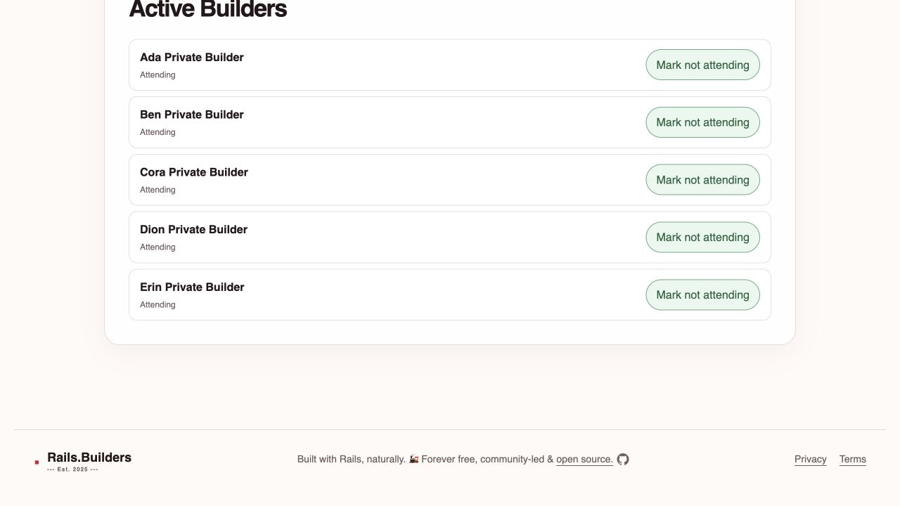
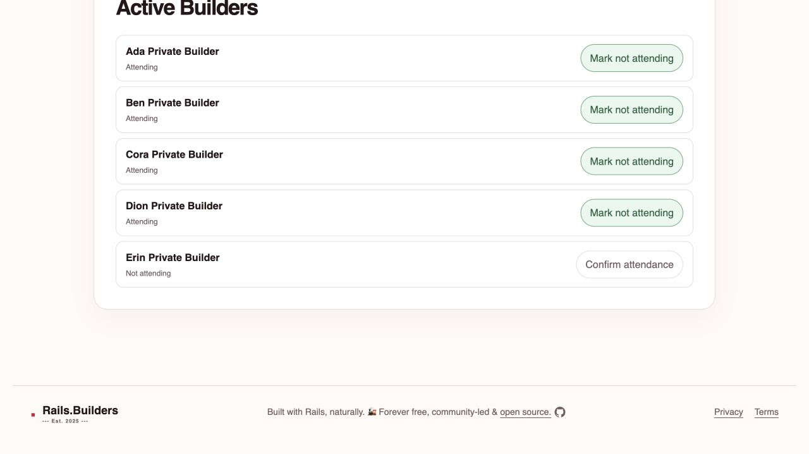
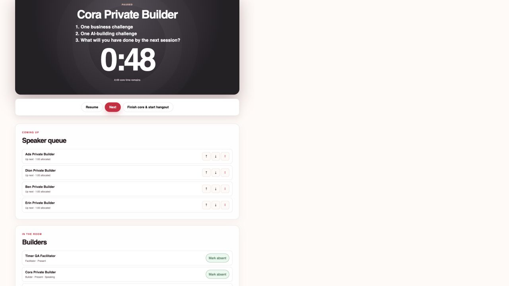
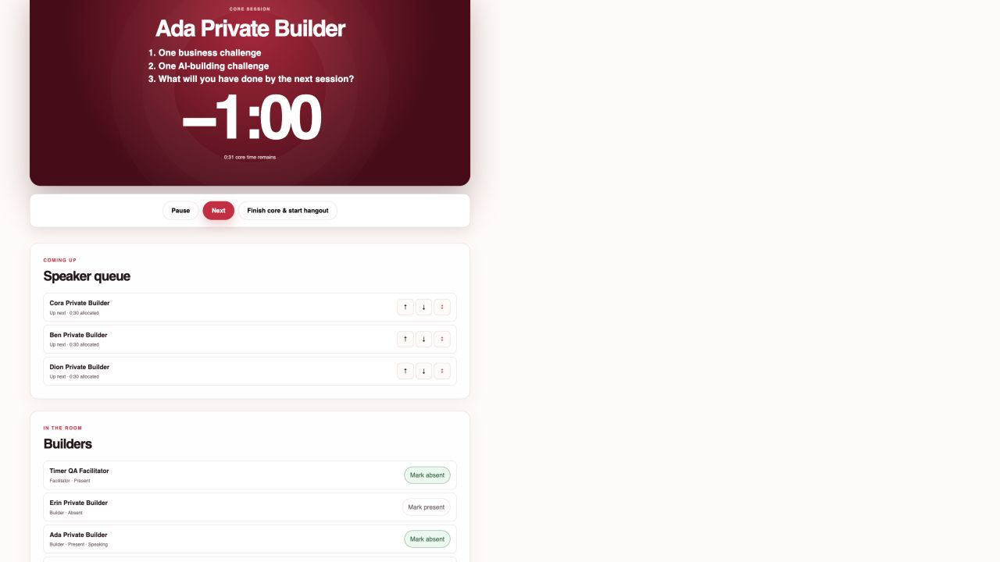
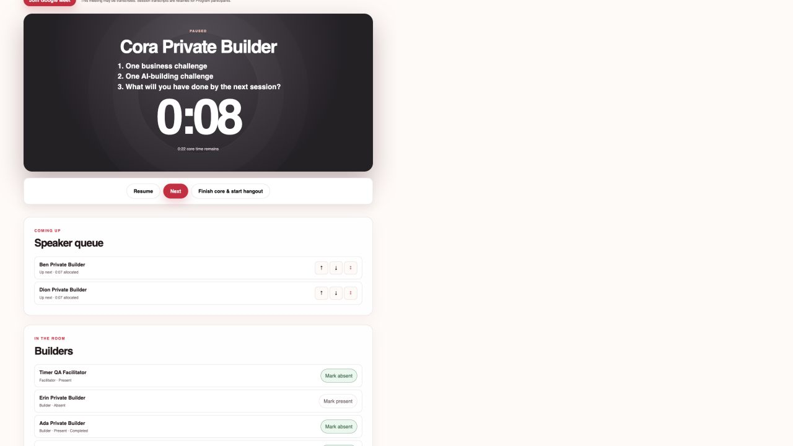
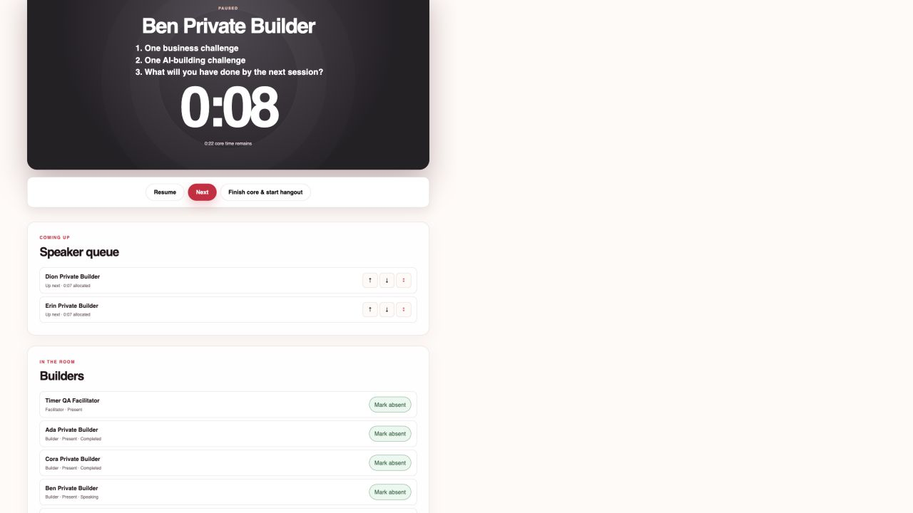
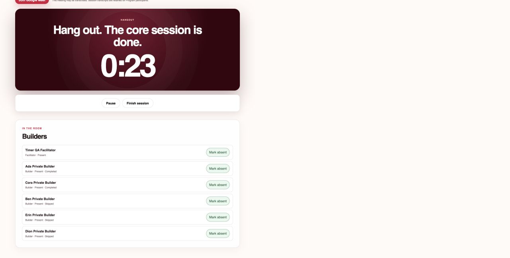
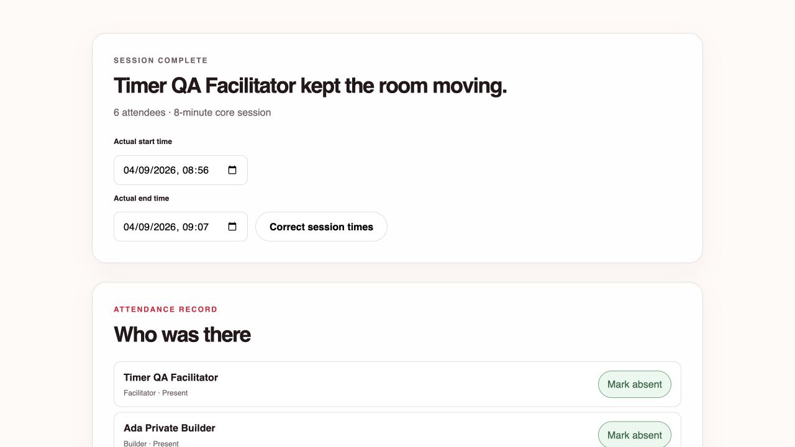
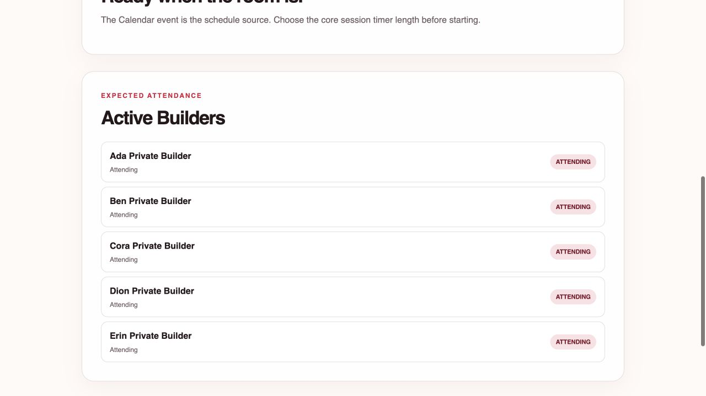
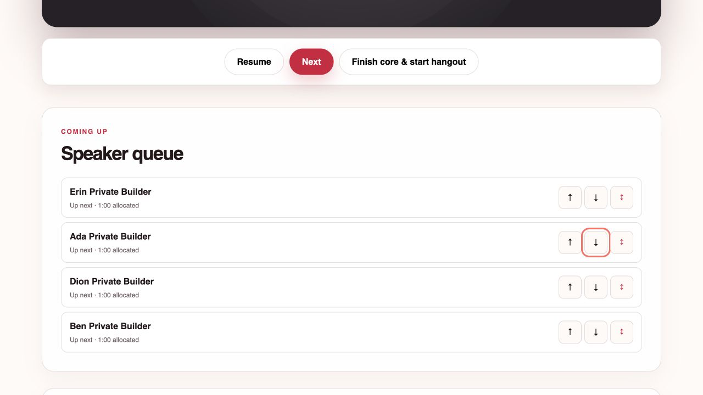
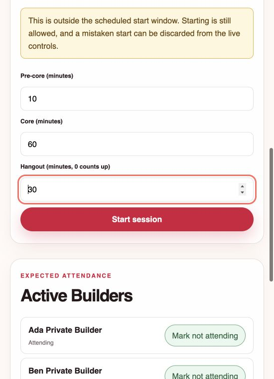
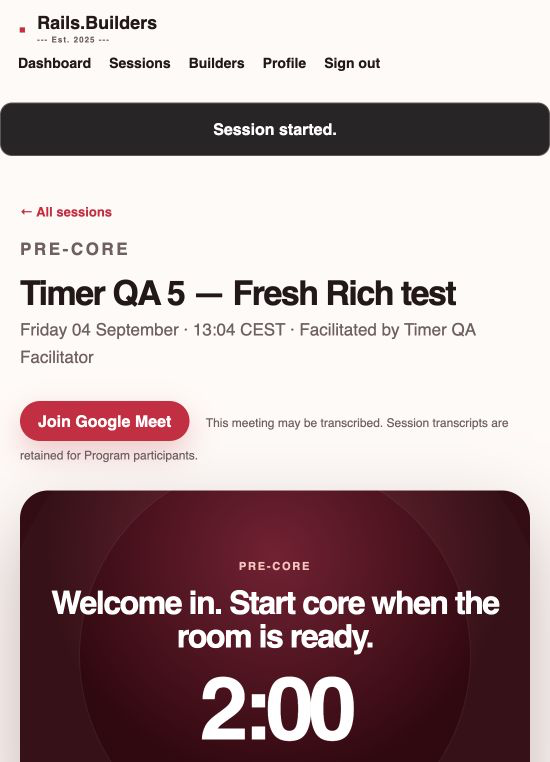
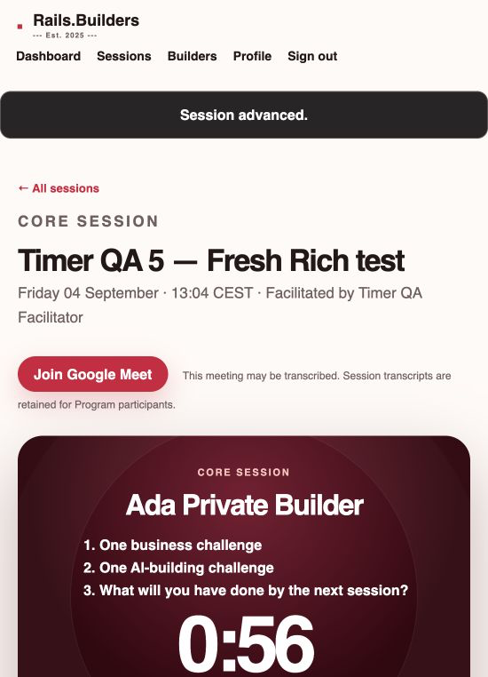
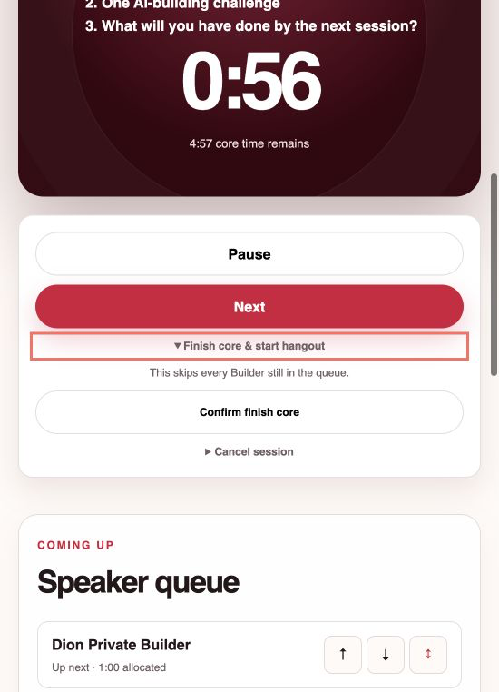
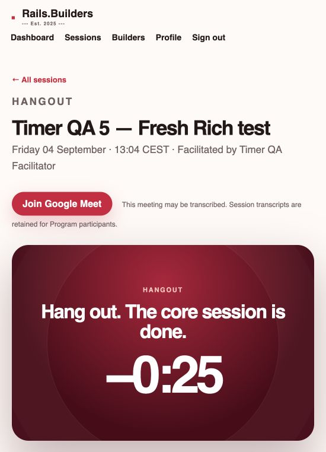
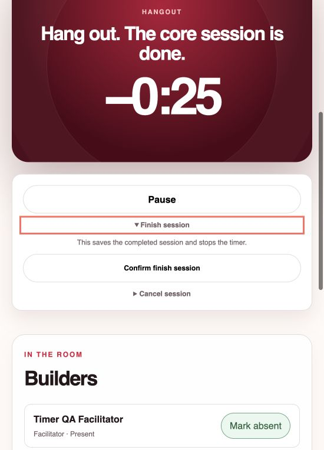
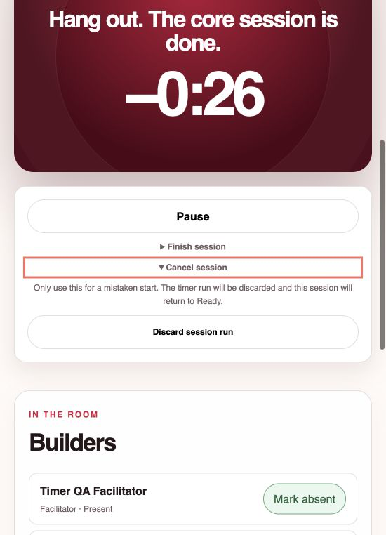
Local test data left behind
- Facilitator login:
timer-facilitator@example.testthrough the normal passwordless sign-in page. - Five active Builders: Ada, Ben, Cora, Dion, and Erin Private Builder. All five profiles are non-public.
Timer QA 4is a completed correction fixture.Timer QA 5is reset to Ready and open in the in-app browser for another run.- The app remains local only. No production data, email, calendar, or deployment was touched.